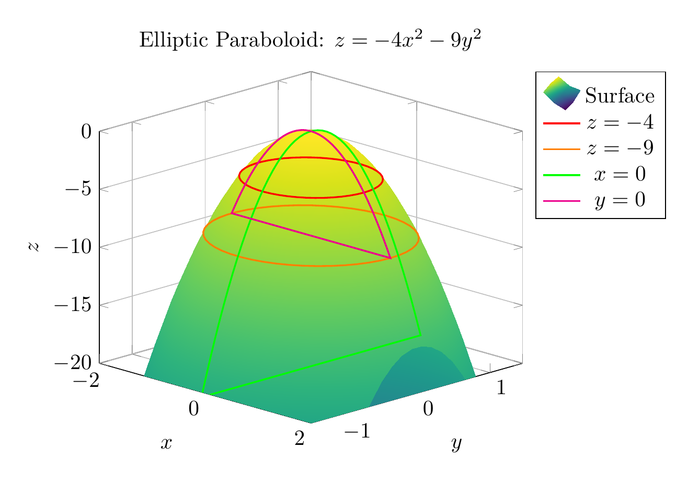
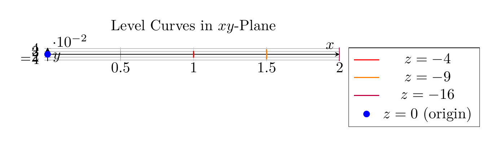

Path: mcma-Qwen3.6-27B/calculus-12.6.16/chat_20260827_000854_643599_utc_0800
Problem
Please solve the math problem in the image.

20260827_000854_643599_utc_0800_0.png
End of problem
Answer
## Solution: Identifying the Quadric Surface
### Given Equation
$$4x^2 + 9y^2 + z = 0$$
### Step 1: Rearrange the Equation
Solving for $z$:
$$z = -4x^2 - 9y^2$$
### Step 2: Analyze the Traces
**Horizontal Traces ($z = k$):**
Setting $z = k$:
$$k = -4x^2 - 9y^2 \implies 4x^2 + 9y^2 = -k$$
- **When $k < 0$**: We obtain ellipses: $\frac{x^2}{(-k)/4} + \frac{y^2}{(-k)/9} = 1$
- At $z = -4$: Ellipse with semi-axes 1 and 2/3
- At $z = -9$: Ellipse with semi-axes 3/2 and 1
- **When $k = 0$**: Single point at the origin $(0, 0, 0)$
- **When $k > 0$**: No real points
**Vertical Traces ($x = h$):**
$$z = -4h^2 - 9y^2$$
Downward-opening parabolas in the $yz$-plane.
**Vertical Traces ($y = k$):**
$$z = -4x^2 - 9k^2$$
Downward-opening parabolas in the $xz$-plane.
### Step 3: Identify the Surface
**Characteristics:**
- Horizontal traces: Ellipses
- Vertical traces: Parabolas opening downward
- Vertex: Origin $(0, 0, 0)$
- Opens: Downward along negative $z$-axis
**Conclusion:** This is an **elliptic paraboloid opening downward along the negative $z$-axis**.
$\boxed{\text{Elliptic Paraboloid opening downward along the negative } z\text{-axis}}$
---


\documentclass[border=10pt]{standalone}
\usepackage{pgfplots}
\usepgfplotslibrary{colormaps}
\pgfplotsset{compat=1.18}
\begin{document}
\begin{tikzpicture}
\begin{axis}[
view={45}{20},
xlabel={$x$},
ylabel={$y$},
zlabel={$z$},
title={Elliptic Paraboloid: $z = -4x^2 - 9y^2$},
colormap/viridis,
domain=-2:2,
y domain=-2:2,
samples=30,
zmin=-20,
zmax=0,
enlargelimits=false,
grid=major,
legend pos=outer north east,
]
% Main surface
\addplot3[surf, shader=interp] {-4*x^2 - 9*y^2};
% Horizontal trace at z = -4 (ellipse)
\addplot3[domain=0:360, samples=50, thick, red] ({cos(\x)}, {(2/3)*sin(\x)}, {-4});
% Horizontal trace at z = -9 (ellipse)
\addplot3[domain=0:360, samples=50, thick, orange] ({1.5*cos(\x)}, {sin(\x)}, {-9});
% Vertical trace at x = 0 (parabola)
\addplot3[domain=-1.5:1.5, samples=50, thick, green] ({0}, {x}, {-9*x^2});
% Vertical trace at y = 0 (parabola)
\addplot3[domain=-1.5:1.5, samples=50, thick, magenta] ({x}, {0}, {-4*x^2});
\legend{Surface, $z=-4$, $z=-9$, $x=0$, $y=0$}
\end{axis}
\end{tikzpicture}
\end{document}

\documentclass[border=10pt]{standalone}
\usepackage{pgfplots}
\usepgfplotslibrary{colormaps}
\pgfplotsset{compat=1.18}
\begin{document}
\begin{tikzpicture}
\begin{axis}[
xlabel={$x$},
ylabel={$y$},
title={Level Curves in $xy$-Plane},
domain=-2:2,
samples=50,
axis lines=center,
grid=major,
axis equal image,
legend pos=outer north east,
]
% Ellipse at z = -4: x^2/1 + y^2/(4/9) = 1
\addplot[thick, red] ({cos(\x)}, {(2/3)*sin(\x)});
% Ellipse at z = -9: x^2/(9/4) + y^2/1 = 1
\addplot[thick, orange] ({1.5*cos(\x)}, {sin(\x)});
% Ellipse at z = -16: x^2/4 + y^2/(16/9) = 1
\addplot[thick, purple] ({2*cos(\x)}, {(4/3)*sin(\x)});
% Point at z = 0
\addplot[only marks, mark=*, blue] coordinates {(0,0)};
\legend{$z=-4$, $z=-9$, $z=-16$, $z=0$ (origin)}
\end{axis}
\end{tikzpicture}
\end{document}

End of answer